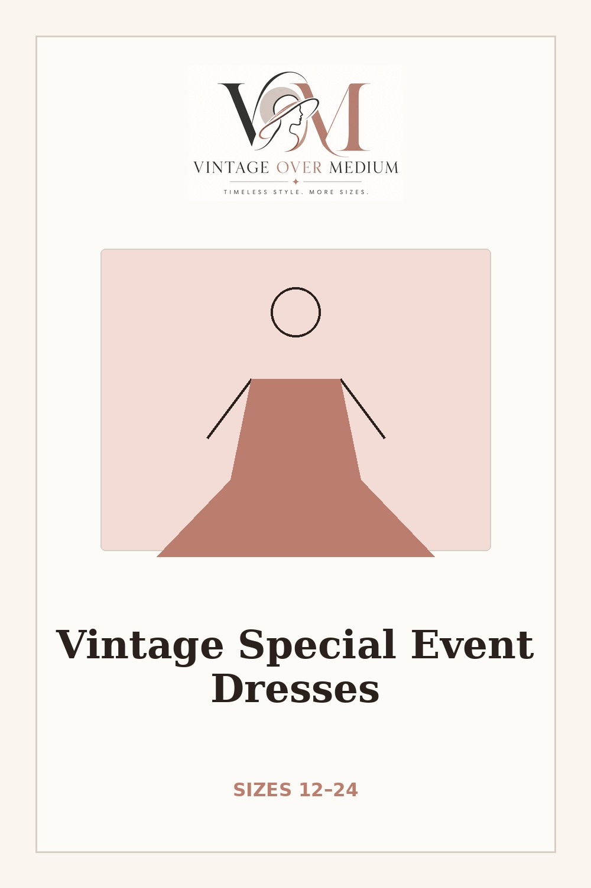

Vintage-Style Special Event Dresses in Sizes 12–24
Weddings, dinners, reunions, parties, and milestone moments are a good excuse to go full vintage. We rounded up retro-style dresses that come in real sizes, from polished daytime events to full-on Old Hollywood.

Across these picks: 12–24 / M–4X
Fit tip: Check the bust first on fitted bodices, then the waist.
Velvet Dresses
Soft, polished, and easy to dress up. Look for stretch velvet for the easiest fit through the bust and hips.
See our current picks on Pinterest →
Sequin & Sparkle
For evenings, parties, and formal events when you want a little shine.
See our current picks on Pinterest →
Bold Color & Prints
Strong color, plaid, and statement details that still feel timeless.
See our current picks on Pinterest →
Work, Dinner & Semi-Formal
Polished enough for work events, dinners, showers, weddings, and more.
See our current picks on Pinterest →
Complete the Look
The finishing pieces that make it look intentional.
See our current picks on Pinterest →
Special Event Dress Fit Tips for Midsize Bodies
Get the Size Cheat Sheet
The one-page guide to shopping retro sizes above a 12, plus new finds when they drop.
No spam. Unsubscribe anytime.